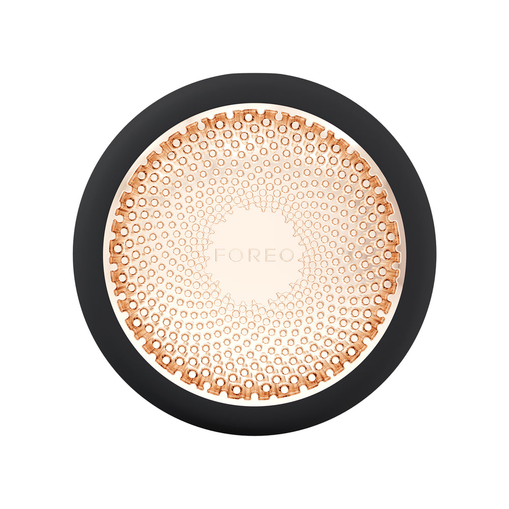
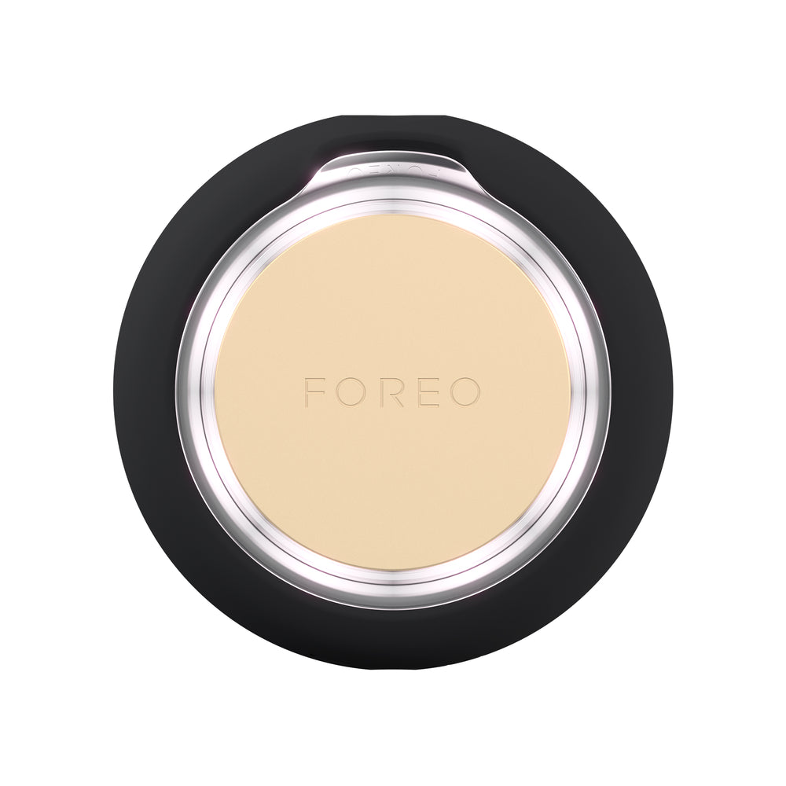
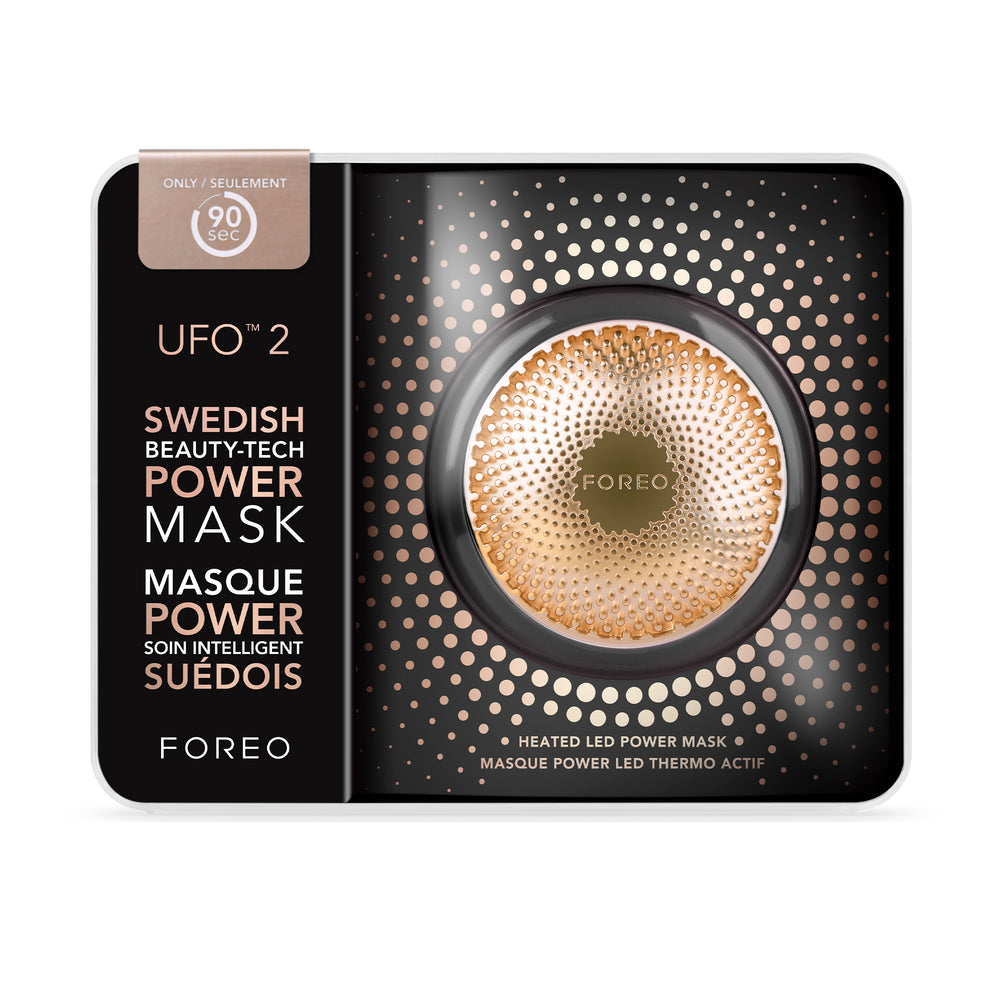
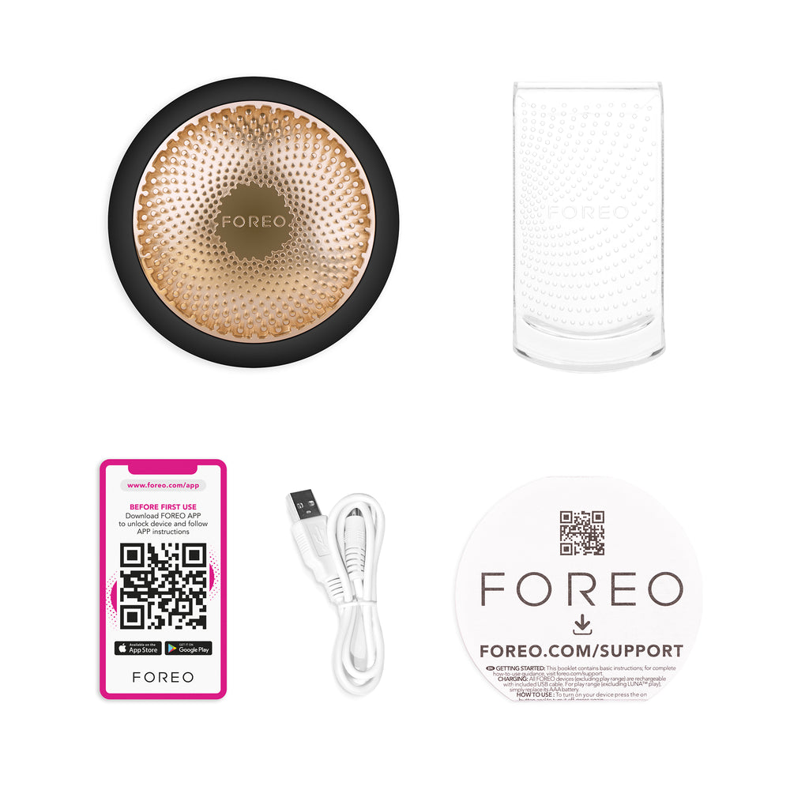

UFO 2 Black
Black / 12 cm (L) x 15 cm (W) x 3.6 cm (H)
$63.00$199.00−68%
+ налог $5.59 → итого $68.59
- UFO redefines self care as a relaxing at-home spa session with pro results in just 2 minutes! This innovative spa treatment combines instant thermotherapy, cryotherapy, full-spectrum LED light therapy, including red LED light therapy, and FOREO’s signature T-Sonic massage to relax facial & neck muscle tension points while boosting skin’s radiance - for softer, smoother, selfie-ready skin in one small palm-sized device.
- Features & Benefits
- Device boosts the effect of mask formulas for a better result than a mask alone
- Ultra-fast thermotherapy warms the skin to an optimal 113°F, a temperature proven to open pores for deeper product penetration
- Cryotherapy cools the skin to a safe 41°F reducing the appearance of puffiness and enlarged pores
- T-Sonic pulsations facilitate absorption of active mask ingredients while providing a soothing facial massage